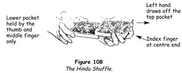

The shuffle that goes by this interesting name is an excellent sleight and serves a number of purposes. It may be used as a genuine shuffle, as a method of controlling a card or a number of cards, as a force, or as a glimpse. It is not difficult and it is genuinely deceptive.
1. Hold the pack in your left hand between the top phalanxes of the thumb and the middle, ring and little fingers. Place the index finger at the outer end. Hold the pack a little towards your left side, at about waist level, the outer end sloping downwards.
2. Grasp the inner end of the pack by its sides between the outermost phalanxes of the right thumb and middle finger, with the index finger resting lightly on the top and the ring and little fingers free.
3. Move the left hand outwards, taking with it a few of the top cards gripped between the thumb and fingers (figure 108). When these cards are clear of the pack let them drop on to the palm.

4. Move the left hand back to its original position, grasp another small group of cards from the top of the pack in the same way as before - that is, between the thumb and fingers - then move the left hand outwards and let this packet fall on the first cards drawn off.
5. Continue these movements until you have drawn off all the cards. Do not move the right hand during the shuffle; the left hand does all the work. After a little practice you will be able to draw off a few cards at a time. The slanting position of the pack slides the cards against the left index finger, which acts as a stop and neatly squares them.
To repeat the shuffle at once, grasp the lower half of the pack at the inner ends by the sides, between the right thumb and second finger, and draw the upper half outwards with the left thumb and fingers. Let the upper half fall into the position described in step 3 above. Now continue the shuffle exactly as described before until you have used all the cards held by the right hand.
Hindu Shuffle Control
Single card
1. Have a card drawn by a spectator. When he has shown it to everyone, begin the Hindu shuffle as described above.
2. After you have drawn off several small packets from the top into the left hand, extend the hand and have him place his card on top of these cards.
3. Move the left hand back to the right hand to continue the shuffle, placing its cards directly under those held by the right hand so that the outer ends of both packets butt against the left forefinger. Press firmly against the side of the top cards of the lower packet with the tip of the right thumb, which extends below the upper packet, and pick up a card or several cards, holding a break (figure 109). Immediately draw the left hand outwards, drawing off a few cards from the top of the upper packet and letting them fall on the cards which remain in the left hand.
The right hand thus retains its own cards and a few of the top cards of the left-hand packet, the topmost of which is the chosen card. These are separated from those above by a small break held by the right thumb. The outer ends and the right sides of both packets are flush and the pack presents an ordinary appearance.
4. Continue the shuffle in the regular way until the cards above the break have been shuffled into the left hand, then drop those remaining in the right hand on top of all, thus bringing the chosen card to the top.
There should be no hesitation in securing the card from the top of the left-hand packet in step 3 above, since it does not matter whether one, two, three or even more cards are picked up by the thumb.
Several Cards
This procedure is much the same as that used to control a single card.
1. Let us say that three cards have been drawn and noted by three people. Begin the Hindu shuffle by drawing off several packets into the left hand. Extend the hand and have one of the cards replaced on them.
2. Continue the shuffle as described in step 3 of the single card control, picking up the chosen card and one or two more in the first action of the shuffle, and approach the second person, who holds the second card. Draw off several packets into the left hand. In the next moment, however, do not draw off any cards from the top, but instead let all the cards below the break drop on to those held by the left hand, which you immediately move outwards towards the spectator.
3. Have him place his card on top of those you hold in your left hand, thus placing his card above the first man's card.
4. Repeat this procedure exactly, that is, begin the Hindu shuffle, picking up a few of the cards at the top of those held in the left hand between the right thumb and second finger, holding a break with the thumb. Draw off several packets from the top with the left hand as you approach the third person, and when you reach him let the cards above the break fall on those in the left hand, without drawing any from the top with the left fingers. The third card is thus placed above the second.
5. Finally, continue the shuffle by drawing off a packet from the top with the left fingers and at the same time grasping between the right thumb and second finger a few of the top cards of those in the left hand, holding a break above them with the thumb as before.
6. Continue the shuffle until all the cards above the thumb break have fallen into the left hand. Drop those that remain on the cards in the left hand. The three chosen cards will be at the top of the pack, but in reverse order to their replacement, that is, the first man's card will be the third from the top.
By using the Hindu shuffle to control a number of cards you save time, an important item, and you also convince those present that the cards are really scattered throughout the pack. This is important, because, and we must reiterate that, unless you have convinced everyone that the cards really are lost, the most brilliant subsequent discovery will not be impressive.
Hindu Shuffle Force
As we have seen, forcing a card is making a spectator draw the card you want him to take and at the same time convincing him that he has had a free choice. The Hindu shuffle enables you to make a most convincing force.
1. Place the card to be forced at the top of the pack.
2. Begin a Hindu shuffle by drawing a packet from the top into the left hand in the normal way. In drawing off the second packet, grasp in the usual way a few of the top cards of those now in the left hand by gripping them between the right thumb and second finger, holding a thumb break.
3. Continue the shuffle as usual by drawing off small packets from the top. Invite a spectator to stop the shuffle whenever he pleases. When he says 'Stop' bring the outer end of the right-hand packet against the left forefinger, flush with the outer end of the packet in the left hand, saying, 'Right here.' Drop the cards below the break on to those in the left hand. Extend this hand and ask the spectator to remove the card at the top.
This force is completely deceptive. It may be used to force several cards if these are placed at the top of the pack.
Hindu Shuffle Glimpse
Let us say that you have taken a shuffled pack and wish to learn the name of a card before forcing it.
1. Begin the Hindu shuffle and, after several packets have been drawn off the top into the left hand, turn the cards held by the right hand so that they face you and are at right angles to those held in the left hand. Rap the inner end of the other packet with these cards (figure 110), as if to square them, glimpsing the bottom card at the same time. Continue the shuffle and drop this card at the top, last of all. This is a natural way of squaring the cards in this shuffle, and it should be used occasionally for that purpose only.

Again, a card may have been returned to the pack and you may have controlled it to the bottom by one of the other methods. Glimpse the card in the manner described above and, after one or two more packets have been shuffled into the left hand, drop those held by the right on top. Offer the pack for shuffling, saying, 'Perhaps it would be better if you shuffled.' You know the name of the card and are perfectly willing to let him shuffle as long as he likes.
The Step
Assume that a card has been drawn and noted.
1. Spring the cards into the left hand, rather slowly, asking the spectator to replace his card. When his hand advances with the card, stop the spring, retaining a part of the pack in the right hand. Say, 'Do you want to replace your card here?' and rap the inner end of the cards in the left hand with the knuckles of the right, squaring them. If he replaces the card, all well and good; if not, spring a few more cards until he is satisfied, and square these as before. Do not look at your hands while squaring.
2. Drop the cards remaining in the right hand on those in the left, so that about 12 mm (½ in) of the packet extends beyond the outer end of the lower packet.
3. Place the right hand over the pack to square it, with the thumb resting against the inner end of the lower packet. Press downwards lightly on the outer end of the upper packet before pushing it flush with the lower packet. This forms a break between the two packets at the inner end, which you pick up with the left little finger at the right side near the inner corner (figure 111).
4. Remove the right hand and the pack appears to be in good condition, although the little finger retains the break.
5. Control the card to the top by means of the overhand shuffle or the pass.
Natural Jog
Suppose a card has been drawn.
1. Hold the pack in your left hand, as for dealing, but with the index finger curled up around the outer end.
2. Cut off the upper half with the right hand by the ends and have the spectator replace his card on the top of the left-hand packet.
3. Hold this packet slanting downwards a little. Toss the right-hand packet on it, so that its outer end strikes against the middle of the left-hand packet at a slight angle (figure 112). The upper half will slide down to the left index finger, which will automatically jog its bottom card at the inner end (figure 113).
4. Press the left thumb on top of the pack and place the right hand over it, with the fingers at the outer end and the thumb at the inner end. Place the tip of the thumb against the inner edge of the jogged card. Press it inwards and upwards flush into the pack, forming a break under the card and holding the break by the left little finger at the right side near the inner corner.
5. The card at the top of the packet under the break is the spectator's card. Bring it to the top by means of the overhand shuffle or the pass.
Do not look at your hands at any time, but talk naturally as you perform the control.
Twelve-Down Riffle
This is one of the best card controls.
1. Spread the cards from your left hand into your right hand as if to have one drawn. Secretly count the first twelve cards, insert your left little fingertip under them to hold a break and square the deck. Give the impression that you have changed your mind.
2. Place your right hand over the pack, with the fingers and the thumb at the ends, and slowly riffle the cards upwards from bottom to top. Ask a spectator on your left to insert his index finger anywhere in the pack as you riffle and remove the card under it. Contrive to have him take one nearer the middle.
3. When he has removed a card and all are looking at it, slant the outer end of the pack downwards and lift off the twelve cards above the break between the right fingers and thumb. Hold the pack and the cards with their backs squarely to the spectators, preventing them from noting how many cards you hold in either hand.
4. Say, 'Kindly replace your card where you took it from.' Extend the left hand a little and have the card replaced at the top of the packet. Drop the cards held in the right hand on top of all and square the pack meticulously.
The spectators believe the card is lost, for they think it is returned to the haphazard position from which it was taken. You know it is the thirteenth card from the top and are ready to use it for whatever trick you have in mind.
TRICKS WITH THE HINDU SHUFFLE
All Change Here
In this effective feat the Hindu shuffle is used to show that apparently every card in the deck is the same. It is an artifice that is useful in several other ways.
1. Have the deck shuffled by a spectator. Instruct him to remove one card and then pass the deck to a second person. Let this person also remove and then return the deck to you.
2. Have the selected cards returned to the deck and control them to the top by means of the Hindu shuffle so that the top card is the second spectator's card.
3. Hold the deck in your left hand and with the right fingers and thumb at the ends remove the top half, at the same time making the backslip and thus placing the second card on the top of the lower half in the left hand. Place this packet aside for the time being.
4. Ask the first man to name a number between, say, five and fifteen. Suppose he calls ten. Have him name his card, say, the five of hearts. Place the packet you hold in your left hand and count off ten cards, pushing them off one by one with your left thumb, and taking them one on top of the other in the right hand. On reaching the tenth card, turn your right hand with the back upwards, and slap the counted cards face upwards on to the cards still in your left hand. 'There it is!' you exclaim. 'The tenth card, the five of hearts!' Immediately remove these face-upwards cards and spread them, showing the five of hearts with nine cards above it. Close the spread, place the packet underneath the cards in your left hand and place all face downwards on the table.
5. Pick up the other packet, and in the course of an overhand shuffle place one card above the second spectator's card at the top. Address him, saying, 'Will you kindly name another number between five and fifteen?' As you say this push the two top cards off the pack to the right a little, and in squaring the pack again secure a left little finger break under these cards.
Let us say that the spectator names the number eight. Remove the top card and turn it face upwards, counting 'One' and placing it squarely on the pack. Square the deck at the ends, grasping the two top cards at the ends between the right thumb and middle finger, moving them inwards so that they protrude over the inner end for about 25 mm (1 in). Immediately draw out the card that is under these two - the third card - and turn it over inwards, bringing it face upwards, and lay it on the first two, counting 'Two.'
Remove the next card - the fourth card - and turn it face upwards and lay it on the first three, counting 'Three'. Continue counting cards in this manner until you have turned one less than the number named - in our example, seven. Under these, and hidden by them, is the chosen card, which is face downwards.
'I want you to be satisfied that my count is accurate,' you say. Push the protruding cards squarely on the pack and slowly deal the cards that are face upwards at the top, counting them. 'Seven cards,' you point out. Tap the chosen card, which is now the top face-down card. 'This is the eighth card, the card at your number. Will you name your card please?'
'The jack of clubs,' let us assume he says. Slowly turn the card face upwards, showing his card.
6. Drop this card, face upwards, on the seven cards which lie face upwards on the table. Pick them all up and place them at the bottom of the deck, thus placing the jack of clubs at the bottom.
7. 'Now really,' you continue, 'I do not as a rule explain how these feats are done. But this one is so delightfully simple that I will show it to you, and you will be able to have some fun with it yourselves.' Place the packet you hold to one side and pick up the first packet, holding it in position for the Hindu shuffle. 'The fact is that all these cards are fives of hearts, hence it made no difference to me what number you called. Look!' Begin a Hindu shuffle by pulling off a small packet into your left hand, then lift your right hand, bring its packet to a vertical position with the bottom card facing the audience squarely. Lower the right hand, continue the shuffle by pulling off a few more small packets from the top, and again lift the right-hand packet, showing the five of hearts. Repeat the same motions until only the five of hearts remains in the right hand. Drop it on top of the packet, square the cards, and palm it in your right hand.
8. Pick up the second packet by drawing it back towards yourself, and in the action add the palmed card to the top. The second person's card is on the bottom of this packet, and you show apparently that all these cards are jacks of clubs by using the moves detailed in step 7, with the following difference. In the first movement, draw off the top card only - the five of hearts - into the left hand, so that when the action is completed it will be the bottom card of the packet. When you have apparently shown that all the cards are jacks of clubs, drop the jack on top of the packet as in step 7. Square the packet and palm the jack in your right hand, placing the rest of the cards on the table.
9. Pick up the first packet with your right hand, adding the palmed jack of clubs. Force it on the first spectator by means of the lift shuffle force. 'These cards are all five of hearts,' you say. 'Take one and put it face down on the table.'
10. Put the packet down, take the second packet, shuffle the five of hearts to the top, and force it on the second spectator by the backslip force. He places it face downwards on the table before him.
11. The trick is done. It only remains to bring out the climax as strongly as possible. On turning their cards face upwards, each spectator finds he has the other man's card. Then with a flourish you spread each packet face upwards, ribbonwise, and all the cards are seen to be different, making up a regular deck.
Ewephindit
Suitable for close-up and impromptu work, this fast revelation of a chosen card has a spectator locating his own card without knowing how he did it.
1. Have a card drawn, noted and returned to the pack, bringing it to the top by means of the Hindu shuffle.
2. Overhand shuffle, taking the card to the bottom.
3. Spread the cards, remove one at random and hand it face upwards to the spectator, saying, 'That's not your card, is it? It's not? Good, then we'll use it for the trick.'
4. Spread the cards in a fan between your hands, in readiness for the sliding key move, drawing the chosen card under the fan with the right fingers. 'Kindly push that card into the pack, face upwards, anywhere you like.'
5. When the card has been inserted in the spread, place the chosen card above it as you would if you were placing a sliding key card above a chosen card.
6. Square the pack, saying, 'There is only one chance in fifty-one that you placed the marker card next to your chosen card.' Run through the cards until you come to the face-up card. Turn the card above it, showing the chosen card. 'And that's exactly what you did!'